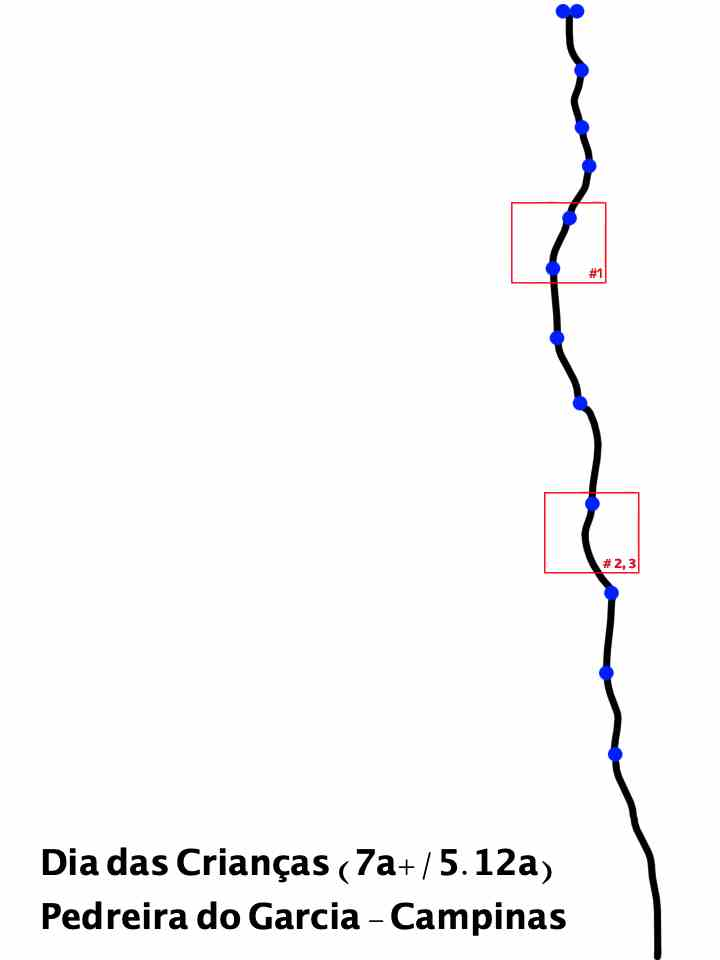

Artigos.
Escalando o “medium”-wall -
Publicado pelo Quero Escalar
Escaladas.
"Why did you want to climb Mount Everest?" with the retort "Because it's there".
Lugares
- Pedra do Elefante, Andradas
- Pedreira do Garcia, Campinas
- Colorido, São Pedro
- Iperocks, Ipero
- Itaqueri, Itirapina
- Ponta da Forteleza - UBT, Ubatuba
Escalada Tradicional
- Vulcano - Pedra do Elefante, Andradas - September 5, 2020
Escalada Esportiva
Send count: 36
Unique Send count: 30
Hardest Route: Aresta Nego Drama - 7a (5.11d)
Hardest Flash: Saci de Muleta - 6c (5.11a)
| Grade |
Count |
Unique Count |
| 7a (5.11d) |
1 |
1 |
| 6c+ (5.11c) |
1 |
1 |
| 6c (5.11a) |
6 |
6 |
| 6a+ (5.10c) |
9 |
9 |
| 6a (5.10a) |
4 |
4 |
| 5c (5.10a) |
3 |
1 |
| 5b (5.9) |
8 |
4 |
| 5a (5.8) |
2 |
2 |
| 4 (5.5) |
2 |
2 |
7a (5.11d)
- Aresta Nego Drama - Pedreira do Garcia, Campinas - September 25, 2020
6c+ (5.11c)
- Senta que lá vem história (#3) - Pedreira do Garcia, Campinas - November 14, 2020
6c (5.11a)
- Saci de Muleta ⚡️ - Pedreira do Garcia, Campinas - September 19, 2020
- Linha Vermelha - Pedreira do Garcia, Campinas - September 23, 2020
- Ombrocídio (#2) - Pedreira do Garcia, Campinas - October 06, 2020
- Crença Limitante - Colorido, São Pedro - November 1, 2020
- Homem Cobra (#3) - Pedreira do Garcia, Campinas - November 12, 2020
- O Chamado ⚡️ - Colorido, São Pedro - December 12, 2020
6a+ (5.10c)
- Jab no Bloco - Pedreira do Garcia, Campinas - August 13, 2020
- Primata - Pedreira do Garcia, Campinas - August 27, 2020
- Gerard - Pedreira do Garcia, Campinas - August 27, 2020
- Moai - Pedreira do Garcia, Campinas - September 19, 2020
- Alternativas - Pedreira do Garcia, Campinas - September 23, 2020
- Voadora de Peru ⚡️ - Itaqueri, Itirapina - October 11, 2020
- Quarto Elemento ⚡️ - Itaqueri, Itirapina - October 11, 2020
- Ganhando Tempo - Pedreira do Garcia, Campinas - November 17, 2020
- Voo Livre - Pedreira do Garcia, Campinas - December 7, 2020
6a (5.10a)
- Via do Upa - Pedreira do Garcia, Campinas - September 15, 2020
- A Fabulosa Jornada do Aprendiz - Colorido, São Pedro - October 10, 2020
- Circo Garcia ⚡️ - Pedreira do Garcia, Campinas - November 4, 2020
- Tudo (ou nada) é Relativo ⚡️ - Pedreira do Garcia, Campinas - November 17, 2020
5c (5.10a)
- Quinta Série [3] - Colorido, São Pedro
- August 08, 2020
- November 1, 2020 [2x]
5b (5.9)
- Não é um quarto [2] - Colorido, São Pedro
- August 09, 2020
- November 1, 2020
- Cantil na Cabeça - Pedreira do Garcia, Campinas - August 22, 2020
- Fim das Picada - Pedreira do Garcia, Campinas
- August 22, 2020
- November 20, 2020
- Descomplicada - Pedreira do Garcia, Campinas
- October 4, 2020
- November 26, 2020
- December 02, 2020
5a (5.8)
- Expressinha - Pedreira do Garcia, Campinas - July 14, 2020
- Motor de Lancha ⚡️ - Itaqueri, Itirapina - October 11, 2020
4 (5.5)
- O Quarto - Pedreira do Garcia, Campinas - August 22, 2020
- Castelo de Cartas ⚡️ - Itaqueri, Itirapina - October 11, 2020
Projetos
-
7b+/5.12b | Pulp Fiction - Pedreira do Garcia, Campinas
-
December 12, 2020: Strong Moves with little crimps and bad feet.
-
7a+/5.12a | Dia das crianças - Pedreira do Garcia, Campinas

-
November 12, 2020: Top rope, fell after the second crux, did not finish the route
-
November 14, 2020: First crux is hard, it's a entity that requires falling.
-
December 10, 2020: First crux solved, two more to go.
- 6c+/5.11c | Moça Bonita - Pedreira do Garcia, Campinas 🍃
-
November 14, 2020: Could not find a crimp, should be possible to send next time.
- 6c+/5.11c | A hora do Espanto - Colorido, Colorido, São Pedro 🍃
-
December 12, 2020: Oposition moves with strange fall.
- 6c+/5.11c | Laranja Mecanica - Colorido, Colorido, São Pedro 🍃
-
December 12, 2020: big deadpoint from a sloper, the last move of the route.
Bouldering
Send count: 19
| Grade |
Count |
| V3 (6a) |
3 |
| V2 (5+) |
6 |
| V1 (5) |
7 |
| V0 (4) |
3 |
V3 (6a)
- Sertao ⚡️ - Ubatuba, UBT Rocks - October 23, 2020
- Se cair, é Pof! - Ubatuba, UBT Rocks - October 23, 2020
- Liberte ⚡️ - Iperocks, Ipero - November 27, 2020
V2 (5+)
- Caldo - Iperocks, Ipero - August 29, 2020
- Limao Capeta - Iperocks, Ipero - August 29, 2020
- Pro abaulado - Ubatuba, UBT Rocks - October 21, 2020
- Sai la da ponta - Ubatuba, UBT Rocks - October 23, 2020
- Gentileza ⚡️ - Iperocks, Ipero - November 27, 2020
- Metamorfose - Iperocks, Ipero - November 27, 2020
V1 (5)
- Grão de Areia - Iperocks, Ipero - August 29, 2020
- Cerveró - Iperocks, Ipero - August 29, 2020
- Uberó - Iperocks, Ipero - August 29, 2020
- Haule - Iperocks, Ipero - August 29, 2020
- W.T.C. - Iperocks, Ipero - August 29, 2020
- Limao Vinagre - Iperocks, Ipero - August 29, 2020
- Na quina - Ubatuba, UBT Rocks - October 21, 2020
V0 (4)
- Bola 8 - Iperocks, Ipero - August 29, 2020
- Barracuda - Ubatuba, UBT Rocks - October 21, 2020
- Traveca - Ubatuba, UBT Rocks - October 22, 2020